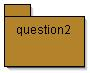
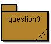

Le
décorateur de boisson
Le
décorateur de boisson TP 6
Thèmes :
|
Le
décorateur de boisson
L'exemple présenté dans le chapitre 3 extrait de Head First Design Patterns, décrit une boisson et des compléments possibles. Le pattern décorateur est utilisé afin, de "décorer" la boisson choisie avec les souhaits d'un client d'une part, et de fournir au client le prix exact de la boisson qu'il a commandée d'autre part.
Exemple : un café corsé avec du lait, s'écrit:
Beverage darkRoastWithMilk = new Milk( new DarkRoast());et l'obtention de son prix :
double price = darkRoastWithMilk.cost();
Les différentes boissons héritent de la classe abstraite Beverage,
La classe abstraite CondimentDecorator, instance du pattern Décorateur, représente les exigences possibles du client...Remarque: le 3ème paramètre d'assertEquals est la précision de comparaison entre 2 réels.
en ajoutant le chocolat (classe Chocolate) comme boisson; le coût de cette boisson est de 2.10
avec toutes les méthodes correspondant aux boissons suivantes :
- un chocolat seul
- un chocolat avec de la crème (Whip)
- un chocolat avec deux rations de crème
- un chocolat avec de la crème, du soja (soy) et du moka (mocha),... (les goûts ne se discutent pas ...)
- un café décaféiné avec du lait

(classe BeetSugar), dont le coût est de 0.1, sa description : "Beet Sugar".
qui se contente de retourner la description et le coût du produit choisi par le client,
selon ce format description $costun exemple et la trace attendue
Beverage b = new BeetSugar( new Whip( new Mocha( new Soy( new HouseBlend() ) ) ) );
System.out.println(b);trace obtenue: "House Blend Coffee, Soy, Mocha, Whip, Beet Sugar $1.44"

AST du TP4 et Sérialisation java
On reprend le TP4 avec ses Expressions arithmétiques, ses Expressions booléennes et ses Instructions.
Rappel : cet ensemble de classes permet de spécifier les Arbres de Syntaxe Abstraite (AST) de petits programmes du petit langage : 'WhileL'.
Exemple :
Programme AST new Sequence( new Affectation( new Variable("x"), new Constante(5) ) , new Affectation( new Variable("y"), new Addition( new Variable("x"), new Constante(7) ) ) ).1 : compléter les classes suivantes par l'AST correspondant au programme donné en commentaire et rappelé dans le tableau suivant.
(Remarque : c'est un exercice d'écriture .!.).
Nom de la Classe Programme (commentaire) AST_Fact xxx := n ; fact := 1 ; while ( ~(xxx=0) ) do fact := fact * xxx; xxx := xxx-1; fin;AST_Mult1
.2 : Vérifiez avec la classe de Test (Junit/BlueJ) fournie que l'évaluation des instances de toutes vos classes écrites en Q2.1 donnent les résultats attendus.
.3 : Construire la classe "boite à outils" JAVASerialiseDeserialise qui contient les méthodes statiques :
- public static void serialjava( IProgr progr, String nomDuFichier ) {...
- public static IProgr deserialjava( String nomDuFichier ) {...
serialjava( progr, nomDuFichier ); devra générer la sérialisation de 'progr' dans le fichier 'nomDuFichier'
deserialjava( nomFichier ) lit le fichier 'nomFichier', qui doit contenir un objet Java de type 'IProgr' sérialisé, et retourne cet objet.
.4 : Vérifier avec la classe de Test (Junit/BlueJ) que les évaluations de Q1.2 d'une part, et de nouvelles évaluations après sérialisation et désérialisation d'autre part, donnent des résultats identiques.
ATTENTION ! Avant la sérialisation, il faut rendre les classes à sérialiser 'Serializable'...
 AST vers XML
.1 : (Retour sur le TP4 (le langage WhileL) : Ajouter les visiteurs JDOM pour 'Expression' et 'ExpressionBooléenne' , permettant de générer le code XML pour les AST de programmes WhileL. Vous respecterez le format XML suggéré par le fichier XML de AST_Fact :
fichier "AST_Fact.xml"
<?xml version="1.0" encoding="UTF-8"?> <programme> <Sequence> <Affectation> <Variable>xxx</Variable> <Variable>n</Variable> </Affectation> <Sequence> <Affectation> <Variable>fact</Variable> <Constante>1</Constante> </Affectation> <Sequence> <TantQue> <Non> <Egal> <Variable>xxx</Variable> <Constante>0</Constante> </Egal> </Non> <Sequence> <Affectation> <Variable>fact</Variable> <Multiplication> <Variable>fact</Variable> <Variable>xxx</Variable> </Multiplication> </Affectation> <Affectation> <Variable>xxx</Variable> <Soustraction> <Variable>xxx</Variable> <Constante>1</Constante> </Soustraction> </Affectation> </Sequence> </TantQue> <Afficher> <Variable>fact</Variable> </Afficher> </Sequence> </Sequence> </Sequence> </programme>
.2 : Construire la classe "boite à outils" SerialiseDeserialiseAST_XML qui contient les méthodes statiques :
- public static void serialAst2xml( IProgr progr, String nomDuFichier ) {...
- public static Element deserialXml( String nomDuFichier ) {...
Remarques :
- serialAst2xml( progr, nomDuFichier ) devra générer le code XML de 'progr' dans le fichier 'nomDuFichier'
- deserialXml( nomDuFichier ) retourne l'élément-racine du code XML contenu dans le fichier 'nomDuFichier'.
Attention ! Hélas, par deserialXml, on ne récupère pas un objet de classe IProgr, sauf à utiliser des API spécialisées comme les api Beans ou JaxB (qui ne sont pas étudiées dans le cadre de ce cours). Il faut donc recréer l'AST "à la main"...
.3 : Dans la classe XML2AST, complétez la méthode statique :
public static Instruction xmlInst2ast( Contexte m, Element element ) qui permet de reconstruire un ast (cf. Question2) à partir d'un élément XML.
.4 : Vérifier avec les classes de Test (Junit/BlueJ) que les évaluations de Q3.2 d'une part, et de nouvelles évaluations après sérialisation-XML et désérialisation-XML + reconstruction de l'AST d'autre part, donnent des résultats identiques.